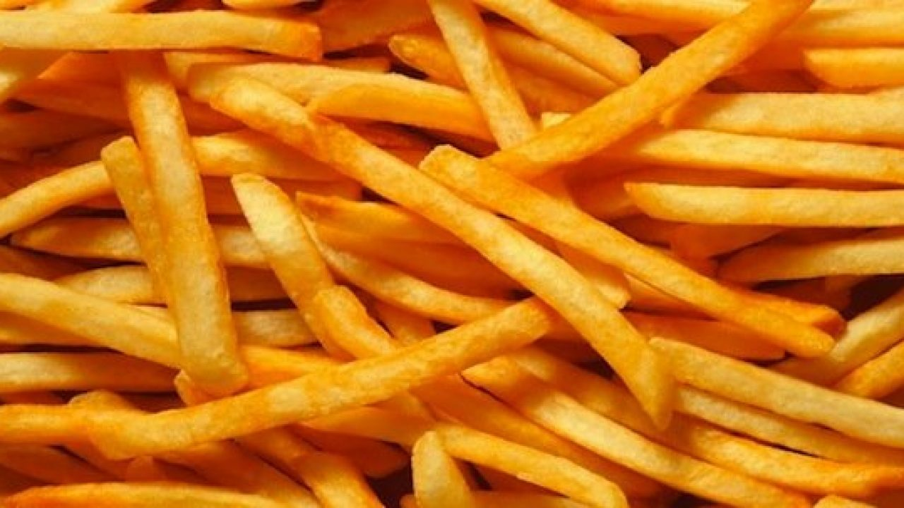

Papas Fritas
Las papas fritas o patatas fritas, también conocidas como papas a la francesa o patatas a la francesa, son las patatas que se preparan cortándose en rodajas o en forma de bastones y friéndolas en aceite caliente hasta que queden doradas, retirándolas del aceite y luego sazonándolas con sal. Pueden consumirse solas o aderezadas con kétchup, mayonesa u otras salsas. De esta forma se suelen servir como acompañante de las hamburguesas e incluso con platos fuertes como chuletas de cerdo, albóndigas, pollo frito, etc.